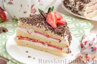

Easy Biscuit cake recipe

Biscuit cake with strawberries and cheese cream is the perfect combination of delicate cake layers, moderately sweet cream and the juiciness of fresh strawberries. The cake is very easy to prepare and relatively quick in time. The recipe is very simple, be sure to try it!
Ingridients:
- For the cake:
- ● Flour - 100 g
- ● Sugar - 100 g
- ● Eggs - 3 pcs.
- ● Vanilin - 1/4 tsp.
- ● Salt - a pinch
- ● Backing powder - 1 tsp. (4 g)
- For the filling:
- ● Strawberries - 350-400 g
- ● Cheese 9% fat - 400 g
- ● Cream 33% fat - 100 g
- ● Powdered sugar - 150 g
- For decoration:
- ● Strawberries - 5-6 berries
- ● Powdered sugar - by taste
Steps to follow:
To prepare a dough:
- Prepare the ingridients. Flour better to sift twice to make a cake fluffy.
- Backing powder is needed only if you're unsure that you'll manage to shake up eggs properly. Amount of ingridients is calculated for a backing mold 18-20 cm in diameter. During backing you may also need backing paper.
- Turn on the oven to preheat it to 170°.
- Divide eggs to whites and yolk parts. To whites add salt, vanilin and half of sugar.
- Shake up until the foam will be thick and stable. If to turn over the bowl the mass will not move.
- Yolks shake up with second part of sugar until slightly whitening. They are suposed to get a bit bigger.
- Carefuly merge and mix whites with yolks until smooth. If the consistency is correct, don't add backing powder.
- Sift flour, vanilin and backing powder (if needed) into a bowl with eggs. Mix carefuly but not long all together. You shouldn't have any unkneaded lumps of flour.
- Bake in a split ring 18 cm in diameter, 9 cm high. The bottom needs to be covered with backing paper. Do not lubricate the walls of the mold with anything!
- Pour out the dough and level it out. You can knock on the table a couple of times so that there are no voids. Put it in an oven preheated to 170 degrees for 30-35 minutes. Check the readiness with a wooden stick - it should come out dry and clean. Do not open the oven for the first 20-25 minutes, otherwise the biscuit will fall off.
- Leave the ready biscuit to cool down for 10-15 minutes.
- Cut the cake out of the ring using a knife and let it cool completely.
- Better to wrap the cooled cake in a bag and put it in the refrigerator for at least 3-4 hours. During this time, the moisture in the biscuit will be evenly distributed, and the cake will not crumble when cutting. This step is NOT NECESSARY.
To prepare a cream:
- Mix the cheese and cream during 2 minutes.
- Add sugar powder and mix.
- Wash and dry strawberries, slice thin.
Decoration:
- Slice the cake carefuly to 2-3 layers.
- According to amount of cake slices, pay attention to amount of cream you have. You should spread it evenly and enouth for top too.
- Between layers of cake, place strawberry slices on top of the cream.
- Decorate cake due to your taske with cream, grated chocholate, sugar powder and strawberries.